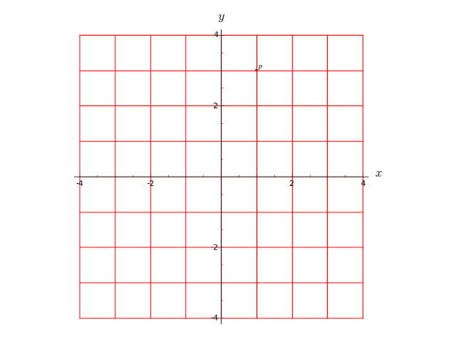
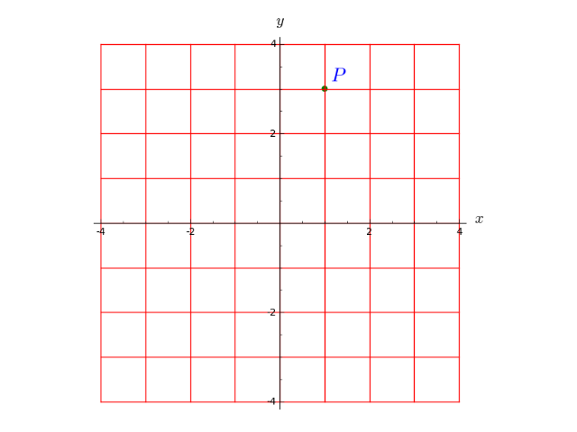
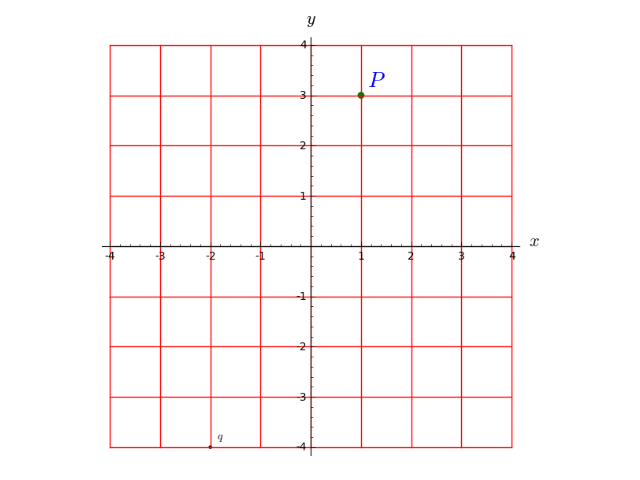
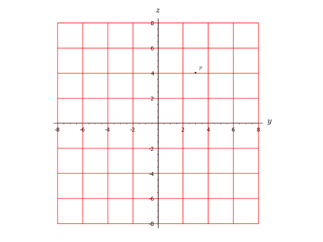

Points of Topological Manifolds¶
The class ManifoldPoint implements points of a
topological manifold.
A ManifoldPoint object can have coordinates in
various charts defined on the manifold. Two points are declared
equal if they have the same coordinates in the same chart.
AUTHORS:
- Eric Gourgoulhon, Michal Bejger (2013-2015) : initial version
REFERENCES:
EXAMPLES:
Defining a point in \(\RR^3\) by its spherical coordinates:
sage: M = Manifold(3, 'R^3', structure='topological')
sage: U = M.open_subset('U') # the complement of the half-plane (y=0, x>=0)
sage: c_spher.<r,th,ph> = U.chart(r'r:(0,+oo) th:(0,pi):\theta ph:(0,2*pi):\phi')
We construct the point in the coordinates in the default chart of U
(c_spher):
sage: p = U((1, pi/2, pi), name='P')
sage: p
Point P on the 3-dimensional topological manifold R^3
sage: latex(p)
P
sage: p in U
True
sage: p.parent()
Open subset U of the 3-dimensional topological manifold R^3
sage: c_spher(p)
(1, 1/2*pi, pi)
sage: p.coordinates(c_spher) # equivalent to above
(1, 1/2*pi, pi)
Computing the coordinates of p in a new chart:
sage: c_cart.<x,y,z> = U.chart() # Cartesian coordinates on U
sage: spher_to_cart = c_spher.transition_map(c_cart,
....: [r*sin(th)*cos(ph), r*sin(th)*sin(ph), r*cos(th)])
sage: c_cart(p) # evaluate P's Cartesian coordinates
(-1, 0, 0)
Points can be compared:
sage: p1 = U((1, pi/2, pi))
sage: p == p1
True
sage: q = U((1,2,3), chart=c_cart, name='Q') # point defined by its Cartesian coordinates
sage: p == q
False
-
class
sage.manifolds.point.ManifoldPoint(parent, coords=None, chart=None, name=None, latex_name=None, check_coords=True)¶ Bases:
sage.structure.element.ElementPoint of a topological manifold.
This is a Sage element class, the corresponding parent class being
TopologicalManifoldorManifoldSubset.INPUT:
parent– the manifold subset to which the point belongscoords– (default:None) the point coordinates (as a tuple or a list) in the chartchartchart– (default:None) chart in which the coordinates are given; ifNone, the coordinates are assumed to refer to the default chart ofparentname– (default:None) name given to the pointlatex_name– (default:None) LaTeX symbol to denote the point; ifNone, the LaTeX symbol is set tonamecheck_coords– (default:True) determines whethercoordsare valid coordinates for the chartchart; for symbolic coordinates, it is recommended to setcheck_coordstoFalse
EXAMPLES:
A point on a 2-dimensional manifold:
sage: M = Manifold(2, 'M', structure='topological') sage: c_xy.<x,y> = M.chart() sage: (a, b) = var('a b') # generic coordinates for the point sage: p = M.point((a, b), name='P'); p Point P on the 2-dimensional topological manifold M sage: p.coordinates() # coordinates of P in the subset's default chart (a, b)
Since points are Sage elements, the parent of which being the subset on which they are defined, it is equivalent to write:
sage: p = M((a, b), name='P'); p Point P on the 2-dimensional topological manifold M
A point is an element of the manifold subset in which it has been defined:
sage: p in M True sage: p.parent() 2-dimensional topological manifold M sage: U = M.open_subset('U', coord_def={c_xy: x>0}) sage: q = U.point((2,1), name='q') sage: q.parent() Open subset U of the 2-dimensional topological manifold M sage: q in U True sage: q in M True
By default, the LaTeX symbol of the point is deduced from its name:
sage: latex(p) P
But it can be set to any value:
sage: p = M.point((a, b), name='P', latex_name=r'\mathcal{P}') sage: latex(p) \mathcal{P}
Points can be drawn in 2D or 3D graphics thanks to the method
plot().-
add_coord(coords, chart=None)¶ Adds some coordinates in the specified chart.
The previous coordinates with respect to other charts are kept. To clear them, use
set_coord()instead.INPUT:
coords– the point coordinates (as a tuple or a list)chart– (default:None) chart in which the coordinates are given; if none are provided, the coordinates are assumed to refer to the subset’s default chart
Warning
If the point has already coordinates in other charts, it is the user’s responsibility to make sure that the coordinates to be added are consistent with them.
EXAMPLES:
Setting coordinates to a point on a 2-dimensional manifold:
sage: M = Manifold(2, 'M', structure='topological') sage: X.<x,y> = M.chart() sage: p = M.point()
We give the point some coordinates in the manifold’s default chart:
sage: p.add_coordinates((2,-3)) sage: p.coordinates() (2, -3) sage: X(p) (2, -3)
A shortcut for
add_coordinatesisadd_coord:sage: p.add_coord((2,-3)) sage: p.coord() (2, -3)
Let us introduce a second chart on the manifold:
sage: Y.<u,v> = M.chart() sage: X_to_Y = X.transition_map(Y, [x+y, x-y])
If we add coordinates for
pin chartY, those in chartXare kept:sage: p.add_coordinates((-1,5), chart=Y) sage: p._coordinates # random (dictionary output) {Chart (M, (u, v)): (-1, 5), Chart (M, (x, y)): (2, -3)}
On the contrary, with the method
set_coordinates(), the coordinates in charts different fromYwould be lost:sage: p.set_coordinates((-1,5), chart=Y) sage: p._coordinates {Chart (M, (u, v)): (-1, 5)}
-
add_coordinates(coords, chart=None)¶ Adds some coordinates in the specified chart.
The previous coordinates with respect to other charts are kept. To clear them, use
set_coord()instead.INPUT:
coords– the point coordinates (as a tuple or a list)chart– (default:None) chart in which the coordinates are given; if none are provided, the coordinates are assumed to refer to the subset’s default chart
Warning
If the point has already coordinates in other charts, it is the user’s responsibility to make sure that the coordinates to be added are consistent with them.
EXAMPLES:
Setting coordinates to a point on a 2-dimensional manifold:
sage: M = Manifold(2, 'M', structure='topological') sage: X.<x,y> = M.chart() sage: p = M.point()
We give the point some coordinates in the manifold’s default chart:
sage: p.add_coordinates((2,-3)) sage: p.coordinates() (2, -3) sage: X(p) (2, -3)
A shortcut for
add_coordinatesisadd_coord:sage: p.add_coord((2,-3)) sage: p.coord() (2, -3)
Let us introduce a second chart on the manifold:
sage: Y.<u,v> = M.chart() sage: X_to_Y = X.transition_map(Y, [x+y, x-y])
If we add coordinates for
pin chartY, those in chartXare kept:sage: p.add_coordinates((-1,5), chart=Y) sage: p._coordinates # random (dictionary output) {Chart (M, (u, v)): (-1, 5), Chart (M, (x, y)): (2, -3)}
On the contrary, with the method
set_coordinates(), the coordinates in charts different fromYwould be lost:sage: p.set_coordinates((-1,5), chart=Y) sage: p._coordinates {Chart (M, (u, v)): (-1, 5)}
-
coord(chart=None, old_chart=None)¶ Return the point coordinates in the specified chart.
If these coordinates are not already known, they are computed from known ones by means of change-of-chart formulas.
An equivalent way to get the coordinates of a point is to let the chart acting on the point, i.e. if
Xis a chart andpa point, one hasp.coordinates(chart=X) == X(p).INPUT:
chart– (default:None) chart in which the coordinates are given; if none are provided, the coordinates are assumed to refer to the subset’s default chartold_chart– (default:None) chart from which the coordinates inchartare to be computed; ifNone, a chart in which the point’s coordinates are already known will be picked, privileging the subset’s default chart
EXAMPLES:
Spherical coordinates of a point on \(\RR^3\):
sage: M = Manifold(3, 'M', structure='topological') sage: c_spher.<r,th,ph> = M.chart(r'r:(0,+oo) th:(0,pi):\theta ph:(0,2*pi):\phi') # spherical coordinates sage: p = M.point((1, pi/2, pi)) sage: p.coordinates() # coordinates in the manifold's default chart (1, 1/2*pi, pi)
Since the default chart of
Misc_spher, it is equivalent to write:sage: p.coordinates(c_spher) (1, 1/2*pi, pi)
An alternative way to get the coordinates is to let the chart act on the point (from the very definition of a chart):
sage: c_spher(p) (1, 1/2*pi, pi)
A shortcut for
coordinatesiscoord:sage: p.coord() (1, 1/2*pi, pi)
Computing the Cartesian coordinates from the spherical ones:
sage: c_cart.<x,y,z> = M.chart() # Cartesian coordinates sage: c_spher.transition_map(c_cart, [r*sin(th)*cos(ph), ....: r*sin(th)*sin(ph), r*cos(th)]) Change of coordinates from Chart (M, (r, th, ph)) to Chart (M, (x, y, z))
The computation is performed by means of the above change of coordinates:
sage: p.coord(c_cart) (-1, 0, 0) sage: p.coord(c_cart) == c_cart(p) True
Coordinates of a point on a 2-dimensional manifold:
sage: M = Manifold(2, 'M', structure='topological') sage: c_xy.<x,y> = M.chart() sage: (a, b) = var('a b') # generic coordinates for the point sage: P = M.point((a, b), name='P')
Coordinates of
Pin the manifold’s default chart:sage: P.coord() (a, b)
Coordinates of
Pin a new chart:sage: c_uv.<u,v> = M.chart() sage: ch_xy_uv = c_xy.transition_map(c_uv, [x-y, x+y]) sage: P.coord(c_uv) (a - b, a + b)
Coordinates of
Pin a third chart:sage: c_wz.<w,z> = M.chart() sage: ch_uv_wz = c_uv.transition_map(c_wz, [u^3, v^3]) sage: P.coord(c_wz, old_chart=c_uv) (a^3 - 3*a^2*b + 3*a*b^2 - b^3, a^3 + 3*a^2*b + 3*a*b^2 + b^3)
Actually, in the present case, it is not necessary to specify
old_chart='uv'. Note that the first command erases all the coordinates except those in the chartc_uv:sage: P.set_coord((a-b, a+b), c_uv) sage: P._coordinates {Chart (M, (u, v)): (a - b, a + b)} sage: P.coord(c_wz) (a^3 - 3*a^2*b + 3*a*b^2 - b^3, a^3 + 3*a^2*b + 3*a*b^2 + b^3) sage: P._coordinates # random (dictionary output) {Chart (M, (u, v)): (a - b, a + b), Chart (M, (w, z)): (a^3 - 3*a^2*b + 3*a*b^2 - b^3, a^3 + 3*a^2*b + 3*a*b^2 + b^3)}
-
coordinates(chart=None, old_chart=None)¶ Return the point coordinates in the specified chart.
If these coordinates are not already known, they are computed from known ones by means of change-of-chart formulas.
An equivalent way to get the coordinates of a point is to let the chart acting on the point, i.e. if
Xis a chart andpa point, one hasp.coordinates(chart=X) == X(p).INPUT:
chart– (default:None) chart in which the coordinates are given; if none are provided, the coordinates are assumed to refer to the subset’s default chartold_chart– (default:None) chart from which the coordinates inchartare to be computed; ifNone, a chart in which the point’s coordinates are already known will be picked, privileging the subset’s default chart
EXAMPLES:
Spherical coordinates of a point on \(\RR^3\):
sage: M = Manifold(3, 'M', structure='topological') sage: c_spher.<r,th,ph> = M.chart(r'r:(0,+oo) th:(0,pi):\theta ph:(0,2*pi):\phi') # spherical coordinates sage: p = M.point((1, pi/2, pi)) sage: p.coordinates() # coordinates in the manifold's default chart (1, 1/2*pi, pi)
Since the default chart of
Misc_spher, it is equivalent to write:sage: p.coordinates(c_spher) (1, 1/2*pi, pi)
An alternative way to get the coordinates is to let the chart act on the point (from the very definition of a chart):
sage: c_spher(p) (1, 1/2*pi, pi)
A shortcut for
coordinatesiscoord:sage: p.coord() (1, 1/2*pi, pi)
Computing the Cartesian coordinates from the spherical ones:
sage: c_cart.<x,y,z> = M.chart() # Cartesian coordinates sage: c_spher.transition_map(c_cart, [r*sin(th)*cos(ph), ....: r*sin(th)*sin(ph), r*cos(th)]) Change of coordinates from Chart (M, (r, th, ph)) to Chart (M, (x, y, z))
The computation is performed by means of the above change of coordinates:
sage: p.coord(c_cart) (-1, 0, 0) sage: p.coord(c_cart) == c_cart(p) True
Coordinates of a point on a 2-dimensional manifold:
sage: M = Manifold(2, 'M', structure='topological') sage: c_xy.<x,y> = M.chart() sage: (a, b) = var('a b') # generic coordinates for the point sage: P = M.point((a, b), name='P')
Coordinates of
Pin the manifold’s default chart:sage: P.coord() (a, b)
Coordinates of
Pin a new chart:sage: c_uv.<u,v> = M.chart() sage: ch_xy_uv = c_xy.transition_map(c_uv, [x-y, x+y]) sage: P.coord(c_uv) (a - b, a + b)
Coordinates of
Pin a third chart:sage: c_wz.<w,z> = M.chart() sage: ch_uv_wz = c_uv.transition_map(c_wz, [u^3, v^3]) sage: P.coord(c_wz, old_chart=c_uv) (a^3 - 3*a^2*b + 3*a*b^2 - b^3, a^3 + 3*a^2*b + 3*a*b^2 + b^3)
Actually, in the present case, it is not necessary to specify
old_chart='uv'. Note that the first command erases all the coordinates except those in the chartc_uv:sage: P.set_coord((a-b, a+b), c_uv) sage: P._coordinates {Chart (M, (u, v)): (a - b, a + b)} sage: P.coord(c_wz) (a^3 - 3*a^2*b + 3*a*b^2 - b^3, a^3 + 3*a^2*b + 3*a*b^2 + b^3) sage: P._coordinates # random (dictionary output) {Chart (M, (u, v)): (a - b, a + b), Chart (M, (w, z)): (a^3 - 3*a^2*b + 3*a*b^2 - b^3, a^3 + 3*a^2*b + 3*a*b^2 + b^3)}
-
plot(chart=None, ambient_coords=None, mapping=None, label=None, parameters=None, color='black', label_offset=0.1, fontsize=10, label_color=None, size=10, **kwds)¶ For real manifolds, plot
selfin a Cartesian graph based on the coordinates of some ambient chart.The point is drawn in terms of two (2D graphics) or three (3D graphics) coordinates of a given chart, called hereafter the ambient chart. The domain of the ambient chart must contain the point, or its image by a continuous manifold map \(\Phi\).
INPUT:
chart– (default:None) the ambient chart (see above); ifNone, the ambient chart is set the default chart ofself.parent()ambient_coords– (default:None) tuple containing the 2 or 3 coordinates of the ambient chart in terms of which the plot is performed; ifNone, all the coordinates of the ambient chart are consideredmapping– (default:None)ContinuousMap; continuous manifold map \(\Phi\) providing the link between the current point \(p\) and the ambient chartchart: the domain ofchartmust contain \(\Phi(p)\); ifNone, the identity map is assumedlabel– (default:None) label printed next to the point; ifNone, the point’s name is usedparameters– (default:None) dictionary giving the numerical values of the parameters that may appear in the point coordinatessize– (default: 10) size of the point once drawn as a small disk or spherecolor– (default:'black') color of the pointlabel_color– (default:None) color to print the label; ifNone, the value ofcoloris usedfontsize– (default: 10) size of the font used to print the labellabel_offset– (default: 0.1) determines the separation between the point and its label
OUTPUT:
- a graphic object, either an instance of
Graphicsfor a 2D plot (i.e. based on 2 coordinates of the ambient chart) or an instance ofGraphics3dfor a 3D plot (i.e. based on 3 coordinates of the ambient chart)
EXAMPLES:
Drawing a point on a 2-dimensional manifold:
sage: M = Manifold(2, 'M', structure='topological') sage: X.<x,y> = M.chart() sage: p = M.point((1,3), name='p') sage: g = p.plot(X) sage: print(g) Graphics object consisting of 2 graphics primitives sage: gX = X.plot(max_range=4) # plot of the coordinate grid sage: g + gX # display of the point atop the coordinate grid Graphics object consisting of 20 graphics primitives
Actually, since
Xis the default chart of the open set in whichphas been defined, it can be skipped in the arguments ofplot:sage: g = p.plot() sage: g + gX Graphics object consisting of 20 graphics primitives
Call with some options:
sage: g = p.plot(chart=X, size=40, color='green', label='$P$', ....: label_color='blue', fontsize=20, label_offset=0.3) sage: g + gX Graphics object consisting of 20 graphics primitives
Use of the
parametersoption to set a numerical value of some symbolic variable:sage: a = var('a') sage: q = M.point((a,2*a), name='q') sage: gq = q.plot(parameters={a:-2}, label_offset=0.2) sage: g + gX + gq Graphics object consisting of 22 graphics primitives
The numerical value is used only for the plot:
sage: q.coord() (a, 2*a)
Drawing a point on a 3-dimensional manifold:
sage: M = Manifold(3, 'M', structure='topological') sage: X.<x,y,z> = M.chart() sage: p = M.point((2,1,3), name='p') sage: g = p.plot() sage: print(g) Graphics3d Object sage: gX = X.plot(number_values=5) # coordinate mesh cube sage: g + gX # display of the point atop the coordinate mesh Graphics3d Object
Call with some options:
sage: g = p.plot(chart=X, size=40, color='green', label='P_1', ....: label_color='blue', fontsize=20, label_offset=0.3) sage: g + gX Graphics3d Object
An example of plot via a mapping: plot of a point on a 2-sphere viewed in the 3-dimensional space
M:sage: S2 = Manifold(2, 'S^2', structure='topological') sage: U = S2.open_subset('U') # the open set covered by spherical coord. sage: XS.<th,ph> = U.chart(r'th:(0,pi):\theta ph:(0,2*pi):\phi') sage: p = U.point((pi/4, pi/8), name='p') sage: F = S2.continuous_map(M, {(XS, X): [sin(th)*cos(ph), ....: sin(th)*sin(ph), cos(th)]}, name='F') sage: F.display() F: S^2 --> M on U: (th, ph) |--> (x, y, z) = (cos(ph)*sin(th), sin(ph)*sin(th), cos(th)) sage: g = p.plot(chart=X, mapping=F) sage: gS2 = XS.plot(chart=X, mapping=F, number_values=9) sage: g + gS2 Graphics3d Object
Use of the option
ambient_coordsfor plots on a 4-dimensional manifold:sage: M = Manifold(4, 'M', structure='topological') sage: X.<t,x,y,z> = M.chart() sage: p = M.point((1,2,3,4), name='p') sage: g = p.plot(X, ambient_coords=(t,x,y), label_offset=0.4) # the coordinate z is skipped sage: gX = X.plot(X, ambient_coords=(t,x,y), number_values=5) # long time sage: g + gX # 3D plot # long time Graphics3d Object sage: g = p.plot(X, ambient_coords=(t,y,z), label_offset=0.4) # the coordinate x is skipped sage: gX = X.plot(X, ambient_coords=(t,y,z), number_values=5) # long time sage: g + gX # 3D plot # long time Graphics3d Object sage: g = p.plot(X, ambient_coords=(y,z), label_offset=0.4) # the coordinates t and x are skipped sage: gX = X.plot(X, ambient_coords=(y,z)) sage: g + gX # 2D plot Graphics object consisting of 20 graphics primitives

-
set_coord(coords, chart=None)¶ Sets the point coordinates in the specified chart.
Coordinates with respect to other charts are deleted, in order to avoid any inconsistency. To keep them, use the method
add_coord()instead.INPUT:
coords– the point coordinates (as a tuple or a list)chart– (default:None) chart in which the coordinates are given; if none are provided, the coordinates are assumed to refer to the subset’s default chart
EXAMPLES:
Setting coordinates to a point on a 2-dimensional manifold:
sage: M = Manifold(2, 'M', structure='topological') sage: X.<x,y> = M.chart() sage: p = M.point()
We set the coordinates in the manifold’s default chart:
sage: p.set_coordinates((2,-3)) sage: p.coordinates() (2, -3) sage: X(p) (2, -3)
A shortcut for
set_coordinatesisset_coord:sage: p.set_coord((2,-3)) sage: p.coord() (2, -3)
Let us introduce a second chart on the manifold:
sage: Y.<u,v> = M.chart() sage: X_to_Y = X.transition_map(Y, [x+y, x-y])
If we set the coordinates of
pin chartY, those in chartXare lost:sage: Y(p) (-1, 5) sage: p.set_coord(Y(p), chart=Y) sage: p._coordinates {Chart (M, (u, v)): (-1, 5)}
-
set_coordinates(coords, chart=None)¶ Sets the point coordinates in the specified chart.
Coordinates with respect to other charts are deleted, in order to avoid any inconsistency. To keep them, use the method
add_coord()instead.INPUT:
coords– the point coordinates (as a tuple or a list)chart– (default:None) chart in which the coordinates are given; if none are provided, the coordinates are assumed to refer to the subset’s default chart
EXAMPLES:
Setting coordinates to a point on a 2-dimensional manifold:
sage: M = Manifold(2, 'M', structure='topological') sage: X.<x,y> = M.chart() sage: p = M.point()
We set the coordinates in the manifold’s default chart:
sage: p.set_coordinates((2,-3)) sage: p.coordinates() (2, -3) sage: X(p) (2, -3)
A shortcut for
set_coordinatesisset_coord:sage: p.set_coord((2,-3)) sage: p.coord() (2, -3)
Let us introduce a second chart on the manifold:
sage: Y.<u,v> = M.chart() sage: X_to_Y = X.transition_map(Y, [x+y, x-y])
If we set the coordinates of
pin chartY, those in chartXare lost:sage: Y(p) (-1, 5) sage: p.set_coord(Y(p), chart=Y) sage: p._coordinates {Chart (M, (u, v)): (-1, 5)}